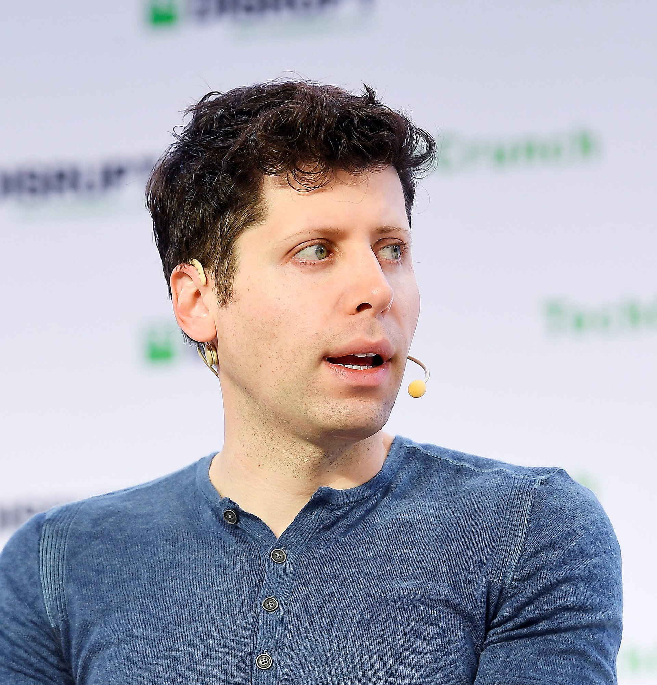
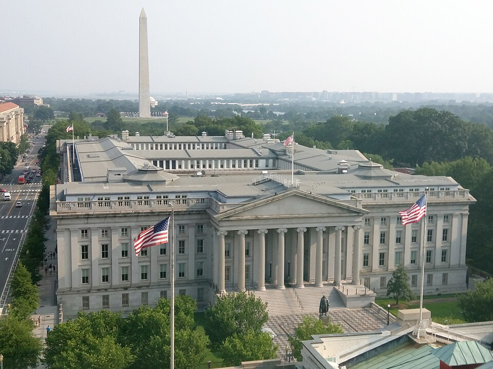

Vol. I · No. 134 · Friday, October 9, 2026 · 12 items · 9.9 min read
A revenue figure shrank by $20 billion without anyone restating it, and the peace prize went to a judge.
AI · San Francisco and Sydney
OpenAI’s run-rate is nearer $50 billion than $70 billion, and the gap cost the Nasdaq 1.3 percent

Sam Altman, OpenAI’s chief executive, in San Francisco in 2019. — Wikimedia Commons / TechCrunch
OpenAI has told investors its annualized revenue was approaching $50 billion at the end of September, the Financial Times reported Thursday. That is about $20 billion below the figure that had circulated since Axios reported it on September 29. Nobody restated anything. The FT traced the $70 billion to “attempts by OpenAI’s own investors to produce a direct comparison with Anthropic’s annualised revenues.” Anthropic counts sales made through its cloud partners and OpenAI does not, TechCrunch noted, so one number was and the other net.
The market traded the difference anyway. The Nasdaq fell 1.3 percent to 27,193 and the S&P 500 lost 0.5 percent, Kiplinger reported. CoreWeave dropped 8 percent, Oracle 5.5 and Nvidia 2.9, according to SiliconANGLE. is unaudited and has no standard definition. OpenAI raised $122 billion in March and has pushed its listing to 2027.
I think the Firmus situation represents an important reality check for the AI investment boom.
— Jun Bei Liu of Ten Cap, to Reuters, October 9
In Sydney the consequence arrived within hours. , an Nvidia-backed data center developer, shelved a A$5 billion float a day after its books closed, Reuters reported. It had sought A$11 a share, an equity value of $30.6 billion and nearly triple its August round. Orders had covered the deal until investors began pulling them on Wednesday. The terms would have let existing holders sell more than half the stock on the first day. The Australian Broadcasting Corporation put the raise nearer A$7 billion. Firmus is run by Tim Rosenfield and .
News · Washington · cross-spectrum LCR
Trump rules out striking Iran before the midterms and keeps the blockade
President Trump said Thursday that the United States “will not be attacking Iran at any time prior to the Midterm Elections,” which fall on November 3. He wrote on Truth Social that Iran is “in very bad condition,” that the two sides are talking, and that the of Iranian ports “will remain in full force and effect.” A day earlier Axios had reported that Central Command was told to be ready to resume strikes.
Axios noted that his statements on Iran have preceded attacks before, in June 2025 and on February 27, less than 24 hours before the war began. Lt. Gen. told American officials on Tuesday that a resumed war could force Israel to postpone its October 27 election. Brent neared $106 a barrel, slipped toward $103 on the post and recovered, Fox News reported. Houthi-claimed strikes on in Riyadh killed three Saudis the same day, the Associated Press reported.
News · Oslo · cross-spectrum CLR
The Nobel Peace Prize goes to Navi Pillay, the jurist who found genocide in Gaza
The on Friday gave the peace prize to Navi Pillay, 85, the South African jurist who was United Nations human rights chief from 2008 to 2014 and sat on the first bench of the International Criminal Court. The chair, Jørgen Watne Frydnes, praised a “person who with exceptional courage and integrity has led the way towards a more comprehensive global legal order,” Euronews reported. The committee could not reach her beforehand, and Frydnes asked from the podium that she “please pick up.”
In 2025 Pillay chaired the UN that concluded Israel was committing genocide in Gaza. Israel’s foreign ministry called the award “the grotesque weaponization of an award to legitimize anti-Israel hatred and prejudice,” the Associated Press reported. Asked about her finding, Frydnes said “the Nobel Committee is not the court.” At the she helped establish that rape can be an act of genocide. There were 287 nominees.
AI
The fired go public, and a client hires the lab
AI · San Francisco
Three fired OpenAI safety researchers publish their letter to the board
Three safety researchers fired by OpenAI last week published a letter on Thursday to the company’s and two advisory bodies. Jasmine Wang, Tomek Korbak and Mikita Balesni ask OpenAI to honor its commitment to embed outside safety auditors, to preserve the ability to its frontier models, and to keep talking with outside researchers. “AI is not a normal technology, and OpenAI is not a normal company,” they wrote.
OpenAI says the three violated policies on “accessing and handling sensitive company information,” after an allegation that confidential material went to an outside safety group, TechCrunch reported. Wang says she was faulted for reading an executive’s inbox when “OpenAI that access to me for recruiting.” An internal memo from a research leader said the decisions “were not about raising safety concerns” and that “we do not terminate employees for raising concerns.”
AI · Dallas
AT&T’s in-house legal unit partners with OpenAI, which prices bulk document review at ten cents
AT&T’s in-house legal agency, LegalEdge, said Thursday it is partnering with OpenAI to build legal workflows, Artificial Lawyer reported. LegalEdge launched in January and handled nearly 100 matters in six months. “Legal judgment remains human,” said , AT&T’s general counsel. The same day OpenAI put Decisions into public beta, an interface priced at $0.10 per million input tokens for , with no charge for output. Both reports come from one trade outlet.
Markets & Deals
The long bond finds buyers, at a price
Corporate · Washington and Istanbul
A $22 billion 30-year sale tails by a hair, and Waller says the next hike can wait

The Treasury building in Washington. — Wikimedia Commons
The Treasury sold $22 billion of 30-year bonds on Thursday at 5.618 percent, a tenth of a basis point above the level, investingLive reported. Bids covered the sale 2.54 times. took 72.3 percent and dealers were left with 6.8, against an average of 10.3. It closed a week of $119 billion in coupon supply. The Treasury’s par curve had the 10-year at 5.22 percent and the 30-year at 5.60 at the close, down six and seven basis points.
In Istanbul, Governor said he anticipates “additional hikes,” then added: “The hikes do not need to come at consecutive meetings, but they should be in place in an acceptable period of time.” His text cites traders pricing an 85 percent chance of at least one more by December. The Fed meets October 27 and 28. Jobless claims were 197,000, and September consumer prices are due Wednesday.
Corporate · Houston
Crescent Energy buys Devon’s Eagle Ford acreage for $4.2 billion, with its seller’s banker lending
Crescent Energy agreed Thursday to buy Devon Energy’s Eagle Ford assets for a headline $4.2 billion, the largest deal signed in the window. Its filing puts the net price at about $3.85 billion after adjustments running from a July 1 . The assets produce about 68,000 barrels of oil equivalent a day. JPMorgan and RBC Capital Markets committed the debt. RBC is also Devon’s financial adviser, and is advising Crescent on financing. Latham and Vinson & Elkins act for Crescent, Kirkland for Devon.
Corporate · South Florida · Miami Beach
An Elliott-backed lender puts $507 million into a South Beach condo tower with no presales
Tyko Capital has lent $507 million to a venture led by David Martin’s Terra to build a 28-story, 106-unit condominium at 1250 West Avenue in Miami Beach, Commercial Observer reported Thursday. Sales do not open until next year. Lenders usually wait for to reach a threshold first. The loan works out to about $4.8 million a unit. The site held a 238-unit building from 1964 that Terra bought for $120 million last year. Tyko, backed by , earlier lent $392 million on Terra’s convention center hotel.
Law & the Courts
A league sides with the states
Culture · Washington
The NFL tells the Supreme Court that sports event contracts are bets, not swaps
The Supreme Court, where New Jersey’s petition is pending. — Wikimedia Commons / Jarek Tuszyński
The National Football League asked the Supreme Court on Thursday to hear New Jersey’s case against Kalshi. Its amicus brief in Flaherty v. KalshiEX, No. 26-299, argues that sports event contracts are “not financial swaps subject to the exclusive jurisdiction of the Commodity Futures Trading Commission,” The Block reported. A , the league says, hedges a risk the holder already bears, while a sports contract creates exposure to an outcome with no prior stake.
If the contracts are swaps, federal law preempts state gambling regulation, the regime opened by . The league wants sportsbook-style safeguards: limits on certain contracts, higher age minimums and cooperation on inside information. Kalshi says the commission already polices these markets. Gaming lawyer Daniel Wallach said the brief “meaningfully increases the chances of a cert grant.” Bloomberg Law reported that the justices could act by December, and that a would push the case back a year.
Corporate · Dover, Delaware
Delaware’s high court affirms an activist’s advance-notice win a day after argument
The Delaware Supreme Court on Thursday affirmed, one day after argument, a ruling that Empery Digital’s board wrongly rejected an activist’s slate of nine directors. In Lane v. ATG Capital, the court upheld Vice Chancellor Lori Will’s reading of the company’s and her finding that the board waived two theories it raised only in litigation. “Advance notice bylaws are not moving targets,” Will wrote in August. Empery, a , was trading early this year at about 0.73 of the value of its coins. Stockholders vote October 14.
The World
Two buses in Kramatorsk
News · Kyiv · single-tier coverage C
A Russian bomb kills at least 35 on two buses in Kramatorsk, and Zelenskiy turns on Washington
A Russian bomb struck two buses in on Thursday, killing at least 35 people and wounding about 20, Reuters reported. In Kyiv, Mayor Vitali Klitschko said four died and 19 were hurt in morning drone attacks on warehouses, data centers and the power grid. President Volodymyr Zelenskiy put the toll across Ukraine at 78 dead and 215 wounded in two days. Moscow denies targeting civilians.
Zelenskiy was answering Secretary of State Marco Rubio, who had called the war a stalemate. “That’s called unwillingness,” he said, and asked Washington to widen Ukraine’s access to for targeting missile launchers. “One cannot, on the one hand, negotiate with the Russians about future economic projects,” he said. Reuters reported that American and Russian officials, including the envoy Jared Kushner, have discussed bringing an American investor into . Ukrainian negotiators are due in the United States on Friday.
Entertainment & EASL
A classicist takes the literature prize
Culture · Stockholm
Anne Carson wins the Nobel Prize in Literature
The Swedish Academy on Thursday gave the Nobel Prize in Literature to Anne Carson, 76, the Toronto-born poet, classicist and translator. Ingrid Carlberg, the academy’s permanent secretary, said Carson was in Iceland “listening to the wind” when the call came and “was very taken by surprise.” Anders Olsson, who chairs the prize committee, said nearly all her work sits at “the intersection between the philologist’s obsession with words” and the poet’s search for new meaning, the Associated Press reported.
Her books include Eros the Bittersweet, , the Sappho translation and Nox. The rights are split. Knopf and Vintage hold most of the backlist, and Penguin Random House says Autobiography of Red has sold nearly 100,000 copies. publishes Nox and Wrong Norma, and Princeton holds her first book. The award is 12 million Swedish kronor, about $1.2 million.
Compiled by Matthew Yellin · mattyellin.com · Est. May 2026 · A cross-spectrum brief drawn each morning from wires, filings, and the trade press